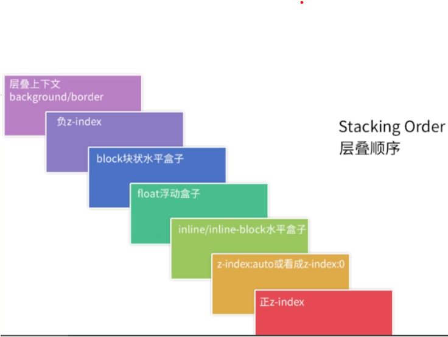

拥有共同父容器的两个 DIV 重叠在一起，是 display:inline-block 叠在上面，还是 float:left 叠在上面？
float先声明
#divB float:left
#divA display:inline-block
inline-block先声明
#divA display:inline-block
#divB float:left
可以看到inline-block始终位于上方，为什么呢？
这里涉及到7阶层叠（stacking level）

详见
https://github.com/chokcoco/iCSS/issues/48